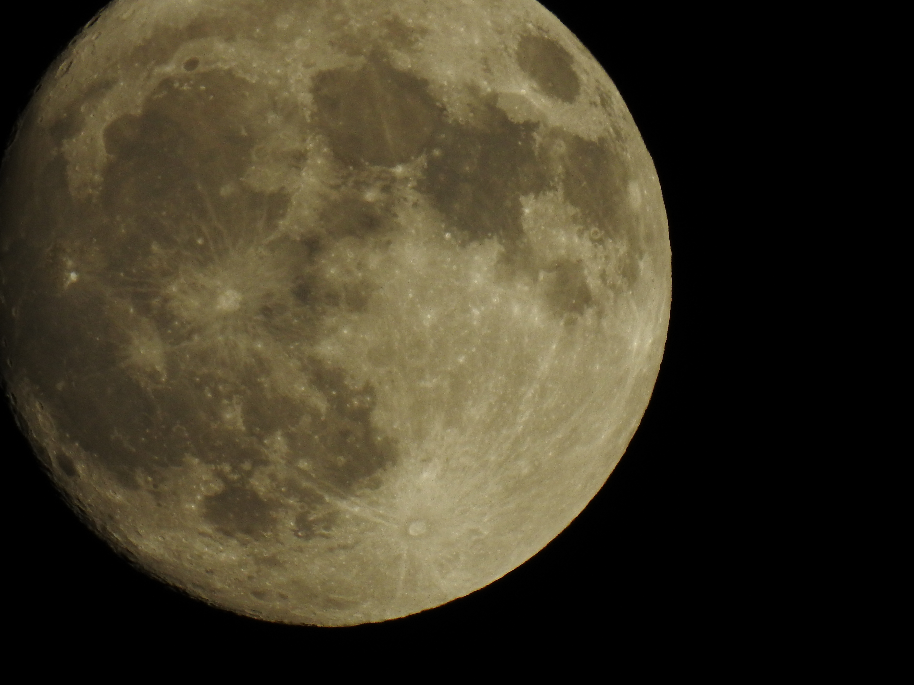
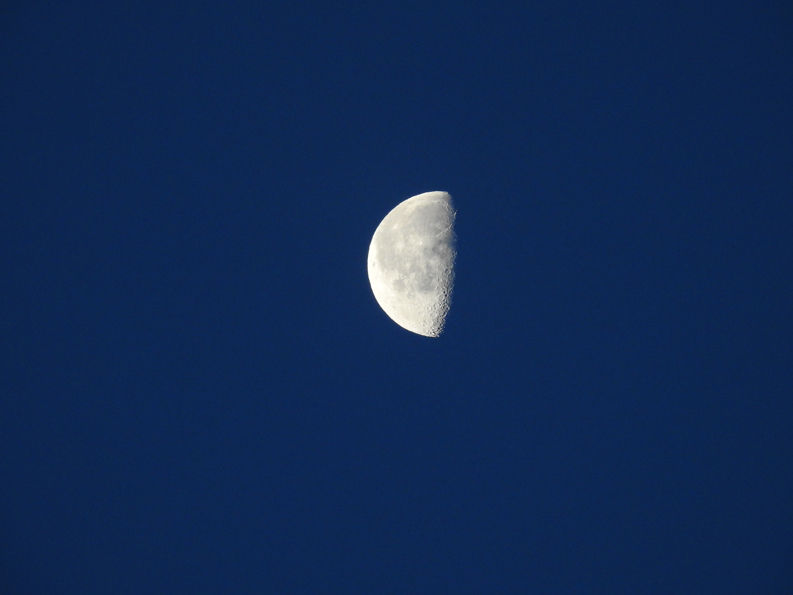
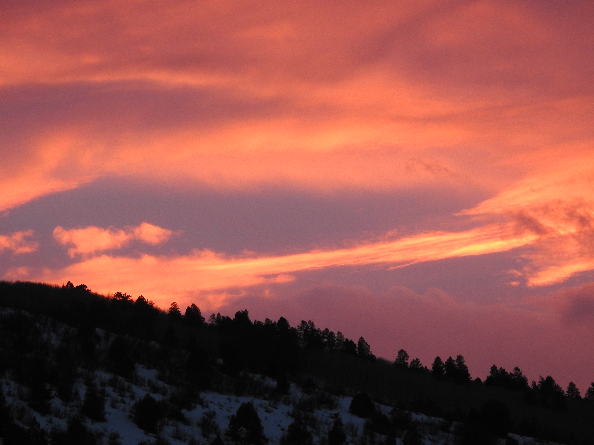

PORTFOLIO
Photographs:
This picture was taken of my nephew Nathan when he was playing on the porch of my grandma's house in Colorado.

This picture was taken on a walk in the park in my hometown of Avon, Colorado. The only edits I made to this photo was turning it black and white.
This photo is one of my favorites, it was taken on a clear night in september using my DSLR camera's 89x zoom feature. Of course the camera had to be stabilized on a tripod. There were no edits made to this picture.

This photo was taken very early in the morning, at approximately 5:00 A.M.. The sky appearing naturally blue on the image is the reason waking up so early was worth it.

This photo was taken at sunset while standing on the front porch of my grandma's house. The lack of air pollution in Avon, Colorado allows for extremely beautiful sunsets, ones that are best observed from one's own backyard.

Poetry:
IF FOR ONLY BUT A MOMENT
IN THIS CRUEL WORLD
A HAPPY RESPITE IS TO BE FOUND
I KNOW IT IS WITH YOU
IF FOR ONLY BUT A MOMENT
I COULD UNDERSTAND THAT WHICH
MOVES MIND AND HEART AND STARS
YOU WOULD GUIDE ME THERE
IF FOR ONLY BUT A MOMENT
A SUNRISE WARMTH FLIES OVER ME
THERE WOULD BE NO ONE LEFT
BUT THE CREATION YOU GLEEFULLY SCULPT
AS I GAIN SOLACE AND AN ECLIPSING FEELING
I KNOW THAT IT EXISTS ONLY IN THE FIRE IN YOUR EYES
YOUR GAZE LOVES ME AND LIVES WITHIN ME
IF FOR ONLY BUT A MOMENT
This poem was written to convey love, and was written many years ago. I still enjoy it today, since the sentiment is the same, and everyone has that special person they can find safety in.